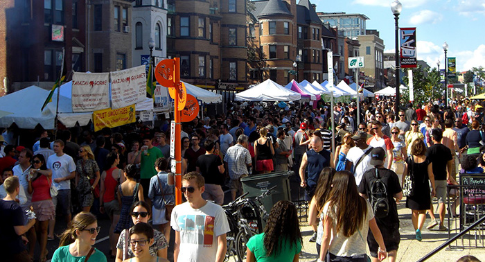

华盛顿哥伦比亚特区不仅是美国的政治中心，也是历史文化爱好者的旅游胜地。你既能感受到美国最核心的价值观，也能领略流溢的浓郁都市风情。这里有超过90个世界级博物馆和画廊，超过2000家各种风格的餐厅，各个季节更有各具特色的节庆活动。在华盛顿，每天都有精彩发生！

国际间谍博物馆于2002年7月19日在美国首府华盛顿开幕，就在联邦调查局“FBI”附近。博物馆共分为“间谍学校”、“历史中的秘密历史”、“人群中的间谍”、“间谍战”及“事件后的真相”等几个展览主题，还有电影院、交互式展台、餐厅及间谍用品展览区。在博物馆里面可以看到60年代苏联情报员使用的鞋跟窃听器、KGB情报员使用的口红手枪，二次大战期间德国的密码机“Enigma”，美国总统乔治•华盛顿在独立战争期间用隐形墨水写给情报员的无字天书，一种可以发射毒液的雨伞伞尖，还有《007》电影中邦德所使用过的阿斯顿•马丁跑车等。
在1908年投入使用之时，联合车站还是世界上最大的火车站。现在，联合车站是AMTEAK总部所在地，有长程、近郊列车穿梭其间，是华盛顿最具代表性的车站。联合车站由建筑家丹尼尔•巴荷姆所设计，外观仿造了罗马古代建筑，内有购物中心和美食街。进驻的店面包括了服饰店、书店、礼品店、旅行用品店、洋酒店、餐厅等共计120余家。此外，这里有游客服务中心、外币兑换、租车、旅游团咨询、擦鞋服务、投币寄物柜、接驳巴士、旅行社等观光客的各项服务。
博物馆坐落在华盛顿国家大草坪东部南侧，馆区包括第四街到第七街之间的3个街区。从1976年开放以来，每年参观者都超过一千万人次。这座博物馆是世界上航空和航天领域收藏展品最丰富的博物馆。几乎每个人都热切地想要看看怀特兄弟的飞机，就是那架在1903年第一次成功地完成了载人飞行的飞机。其它有名的展品包括：首架不间断跨越大西洋的飞机——圣路易斯精神号，世界上第一颗人造卫星——斯帕特尼克1号，阿波罗11号第一次登月的登月舱——哥伦比亚，还有可以触摸的月球岩石标本等。博物馆用不同的主题，把相关的展品串联起来。此外博物馆内的洛克马丁IMAX电影剧场和爱因斯坦天文馆，以及各种飞机航行模拟器，将航空航天的体验，直观并完整地呈现在游客面前。
国际女性艺术博物馆是一所位于美国华盛顿特区的博物馆，简称WMWA。专门展出女性艺术家的作品。包括知名的芙烈达•卡萝、乔治亚•欧姬芙和玛丽•加萨特。此博物馆于1981年成立，目前有7322平方公尺的馆藏面积，过去曾是共济堂教会的用地，在1987年正式对大众开放。
美国国家历史博物馆于1964年对公众免费开放，是一座长方形的五层楼高白色大理石建筑，里面收藏了许多美国历史上非常重要的文物，如：杰弗逊起草的《独立宣言》用过的书桌、贝尔发明的世界上第一架电话机等，至20世纪90年代，这个馆的藏品已达1600万件。
罗斯福纪念馆是专门为纪念美国第32任总统富兰克林•德拉诺•罗斯福而由美国政府出资设计并建造的。游客参观罗斯福纪念馆时，会沿着一条精心规划的路线，经过代表着罗斯福执政的4个时期的4个区域。第一个石室以浮雕再现了罗斯福宣誓就职时的情形。石墙上另刻有不同的手印与面容，与室中央石柱上的雕刻一一对应，表现了经济大萧条时期人们恐惧与无助的心态。第二个石室承接第一石室的”罗斯福新政”与社会福利制度建立的主题，同时容纳了著名雕刻家乔治•西格和罗伯特•格里汉姆的杰作。第三石室以一尊比真人大一倍的总统坐像为主题，罗斯福身披斗篷，面容坚毅。第四石室的主旋律则是罗斯福总统最重要的工作伙伴——罗斯福夫人依莲娜。
美国华盛顿国会图书馆是全世界藏书量最大的图书馆之一，位于华盛顿国会大厦正东处，由杰斐逊大厦、亚当斯大厦和麦迪逊纪念大厦构成。它最早建立于1800年，收藏有2000万册图书以及各种图表、手稿、地图、期刊、唱片、电影胶片等等，总量达到8000万件。馆内的书架连接起来长达547公里。这里有华盛顿的日记手稿、《独立宣言》的原稿、首次印刷成书的《圣经》，甚至还有清政府赠送的书籍。这是一座巨大的知识宝库，游人来到这里，即便是来不及坐下来阅读书籍，至少可以参观一下它宏大的规模和极具水准的布置。每逢周一至周六，图书馆免费向公众开放。
美国最高法院是美国最高级别的联邦法院，位于东国会大道，整个门庭由16根大理石柱撑起，西厅主入口前的石阶两侧，是弗瑞策雕刻的正义之思与法律之威两尊塑像。通往法庭的铜门上各嵌４幅雕刻图案，记载着西方法律演变史中的主要事件。走廊尽头的橡木门后就是最高法院法庭。最高法院设首席大法官一名，联席大法官8名，根据宪法，国会可以修定联席大法官的人数。

亚当斯•摩根位于第18大街、佛罗里达大道和哥伦比亚路之间，是一个多元文化汇聚的社区。这里停车是个难题，地铁也不是很方便，建议搭乘98路公交，一条在亚当斯•摩根和U大街间通行的线路。在亚当斯•摩根，充斥着餐馆、酒吧和时尚专卖小店，这里以丰富的非裔美国人历史文化和埃塞俄比亚风味餐馆而闻名。林肯剧院 (Lincoln Theatre)也坐落于这个街区，作为早期非裔美国人文艺复兴的基石，很多知名的人物如华盛顿的埃灵顿公爵、路易斯•阿姆斯特朗都曾在这里登台。